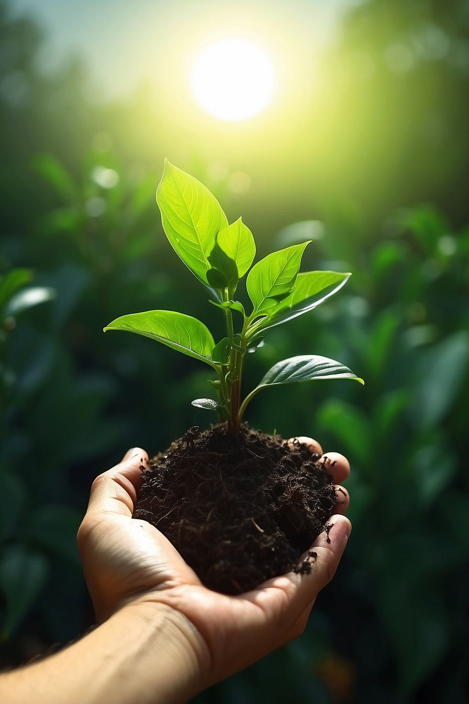
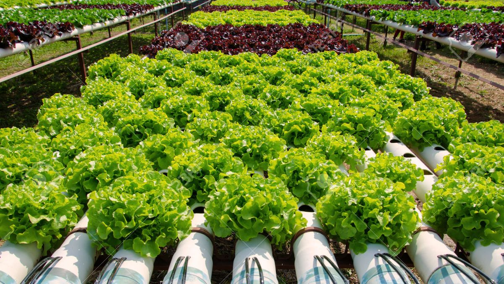
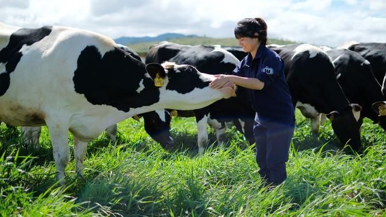
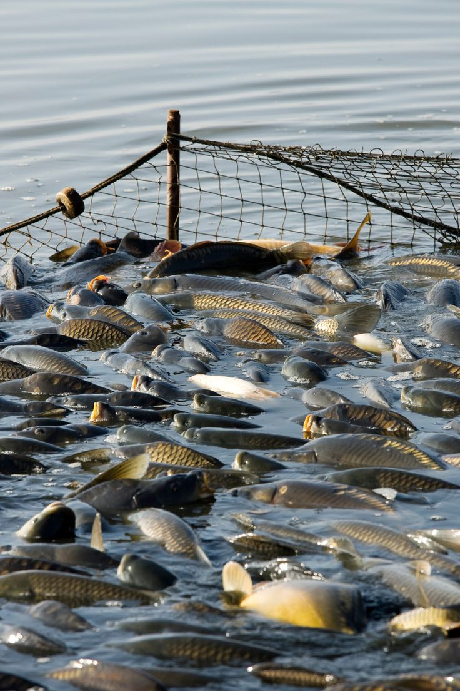

Chào mừng đến với Cơm Quê 6 Xị!
Cơm Quê 6 Xị được thành lập với mong muốn mang đến cho khách hàng những bữa cơm đậm đà hương vị quê nhà – giản dị mà trọn vẹn yêu thương.
Với nguyên liệu tươi ngon, được chọn lựa kỹ càng và quy trình chế biến đảm bảo vệ sinh an toàn thực phẩm, chúng tôi luôn nỗ lực mang đến những món ăn chất lượng, gần gũi và quen thuộc như chính mâm cơm gia đình.
1. Nhóm trồng trọt: Cung cấp rau củ quả hữu cơ, không sử dụng thuốc trừ sâu hóa học. Các hộ nông dân áp dụng mô hình canh tác sinh học, sử dụng phân bón tự nhiên và nguồn nước sạch.
2. Nhóm chăn nuôi: Cung cấp thịt heo, gà, vịt từ các trang trại quy mô vừa, có kiểm soát đầu vào thức ăn và nguồn giống. Quá trình chăn nuôi tuân thủ quy định phòng dịch và vệ sinh thú y.
3. Nhóm cung ứng hải sản và nguyên liệu khô: Nguồn hải sản được đánh bắt từ vùng biển sạch, có chứng nhận vùng khai thác hợp pháp (MSC). Các sản phẩm khô được sơ chế, đóng gói trong môi trường đảm bảo vệ sinh và được kiểm nghiệm định kỳ
Đến với Cơm Quê 6 Xị, bạn không chỉ thưởng thức món ăn ngon mà còn cảm nhận được sự thân thiện, ấm áp của một không gian quê mộc mạc giữa lòng thành phố.

Giới thiệu — Trang trại Rau & Nông sản
Trang trại của chúng tôi cam kết cung cấp nông sản an toàn, minh bạch từ ruộng đến bàn ăn.
Các nhóm sản xuất hoạt động theo tiêu chuẩn sinh thái và an toàn thực phẩm, kiểm soát nghiêm ngặt từ nguồn giống, thức ăn đến quá trình thu hoạch và sơ chế.

1. Nhóm trồng trọt
Cung cấp rau củ quả hữu cơ, không sử dụng thuốc trừ sâu hóa học. Các hộ nông dân áp dụng mô hình canh tác sinh học,
sử dụng phân bón tự nhiên và nguồn nước sạch để đảm bảo chất lượng và an toàn cho người tiêu dùng.
Kiểm tra chất lượng định kỳ, ghi chép nhật ký canh tác minh bạch.

2. Nhóm chăn nuôi
Cung cấp thịt heo, gà, vịt từ các trang trại quy mô vừa, kiểm soát đầu vào thức ăn và nguồn giống.
Quá trình chăn nuôi tuân thủ quy định phòng dịch và tiêu chuẩn vệ sinh thú y nhằm bảo đảm an toàn thực phẩm.
Áp dụng lịch tiêm phòng, kiểm tra sức khỏe định kỳ cho vật nuôi.

3. Nhóm cung ứng hải sản & nguyên liệu khô
Nguồn hải sản được đánh bắt từ vùng biển sạch, có chứng nhận vùng khai thác hợp pháp (ví dụ: MSC).
Các sản phẩm khô được sơ chế, đóng gói trong môi trường đảm bảo vệ sinh và được kiểm nghiệm định kỳ trước khi cung ứng.
Tất cả có giấy tờ chứng nhận nguồn gốc và kết quả kiểm nghiệm khi cần.